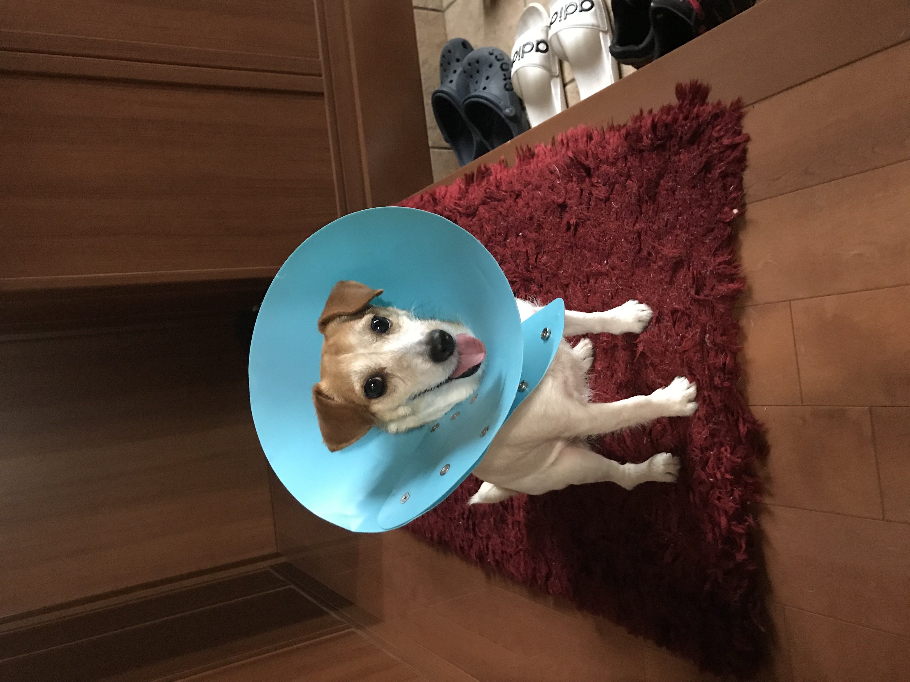
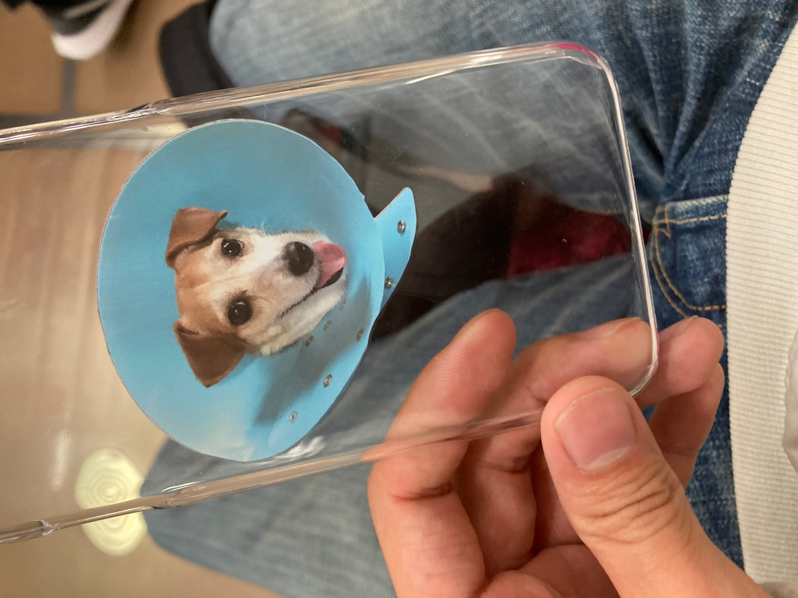

演習２
第３、４回
スマホケースを作った
今回はスマホケースをUVプリンターで印刷してみようと思いやってみました。
使った素材はいつも通りうちのワンちゃんです。

UVプリンターでの作成はほぼ初めてなので分からないことだらけだったのですが、
教えてもらいながら作ることができました。

これをこのスマホケースに写真を移しました。

作業風景

完成は綺麗に写すことことができました。

可愛いスマホケースを作ることができたので、次はアレンジしたスマホケースを作ろうと思います。そしてターポリンでも何かスマホケースをアレンジできないか考えてみようと思います。